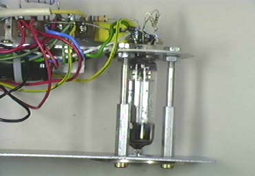

|
This module is based on Eric Barbour's second beam tube modulator design, featuring a 6BN6 FM detector tube. In fact, I used a 4BN6, and as my filament supply was only 5.5 volts, I put three 1N4004 diodes in series with it to drop it down to the appropriate level.
Pretty much everything else was as per the circuit diagram, except for the inclusion power supply decoupling using a 680R resistor and a 100mfd capacitor.
The most fun part of building this module was with the physical construction of it. I tried to capture some of the feel of old equipment, even using an antique knob for the screen voltage. All the aluminium pieces were junk that was to hand. It is yet to receive a coat of wrinkle finish paint - I have to find some. Photos of this module are below.
I have also build a second one of these units that uses pentode pre-amplifiers for both the signal input, and to steer the screen voltage away from the value set by the screen pot.

Article, art & design copyright 2001 by Ken Stone. Circuit copyright 2000 by Eric Barbour.
|